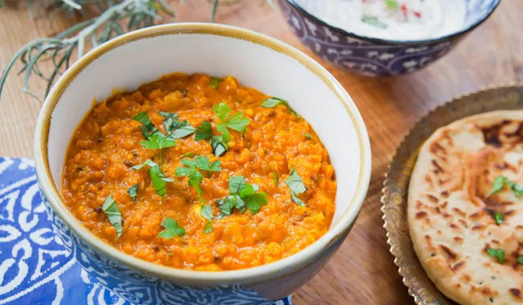

Urad Dal (Ulundu)
Urad dal, is one of the most common lentils used across India. That’s because it is a rich source of protein, fat, carbohydrates, and Vitamin B. Urad dal is highly beneficial for pregnant women since it full of iron, calcium, folic acid, magnesium, and potassium.
It is also known as Ulundu, Vigna mungo, Maash, Kalamug, Urada, Udu, Uddu, Chiringo, Adad, Arad, Uttul, Minumulu, Mash kalaya, Mash, Mei, Muji, Maga, Udid, Uzhunn, Masha, Mash-e-hindi, Banu-siyah
Urad dal is widely used for preparing several dishes including, dosa, papad, and medu vada. And since it is highly nutritious, it is a common ingredient in Ayurvedic medicines..

Benifits of Urad Dal
1. Aids Digestion
Urad dal is a rich source of both insoluble and soluble fibre, which helps in improving digestion. It is responsible for stimulating peristaltic motion and bulk up the stool in the intestine. It is the best remedy for diarrhoea, constipation, cramps, or even bloating.Due to the high fibre content, urad dal is also recommended to people suffering from piles or colic disorder. This lentil is also believed to be an excellent liver stimulant.
2. Protects Your Heart
The minerals present in Urad dal, especially magnesium and potassium, are useful to protect the heart. These minerals, along with fibre, maintain the cholesterol levels to keep our cardiovascular system healthy. They also prevent atherosclerosis. Potassium improves blood circulation and prevent arterial walls from any damage.3. A Great Source of Energy
One of the major urad dal health benefits is that it prevents anaemia due to the high iron content in it. Consuming urad dal can boost your overall energy levels and keep you active throughout the day. Iron helps in the production of red blood cells (RBC), which are the carrier of oxygen to the organs. That is why pregnant women should include urad dal in their diets since they have a higher chance of iron deficiency. Having urad dal regularly also boosts the body’s energy levels and replenishes the RBCs in the body.4. Enhances Bone Health
The important minerals present in Urad dal such as magnesium, iron, potassium, phosphorus, and calcium, are critical in improving bone density. Incorporating urad dal regularly in diet can help maintain bone health and prevent bone-related problems such as arthritis and osteoporosis.5. Helps to Control Diabetes
One of the biggest Urad dal health benefits is its high fibre content, which also indirectly helps in controlling and maintaining glucose levels. After all, to control diabetes, you need to monitor your diet and see what all you are eating. Fibre in urad dal keeps you feeling full for a longer time and helps in regulating the nutrients that are absorbed by your digestive tract.6. Eases Pain And Inflammation
If you are suffering from pain and inflammation, then urad dal can provide instant relief. This lentil contains a high amount of vitamins and minerals that boost metabolism. Urad dal can be mashed into a paste and directly applied to aching joints and muscles. Another important urad dal benefit is that it can help decrease oxidative stress levels.7. Great for Your Skin
The high content of minerals and vitamins in urad dal helps to maintain healthy skin and hair. It reduces skin irritation, and its high iron content circulates more oxygen in the body for radiant and glowing skin. Urad dal can also reduce sunburn, tan, and acne. It is also great for hair as the essential fatty acids present in the lentil can strengthen the hair and prevent them from becoming brittle.How to use Urad dal
A. Cooked Urad dal
i. Soak about 200g of whole Urad dal (Black) for 3-4 hours and drain the water.
ii. Pressure cook in 2-3 cups of water in a pressure cooker for 3-4 whistles.
iii. Switch off the gas and keep it aside.
iv. Add 1 tablespoon desi ghee in a pan and let it heat for some time.
v. Put some ghee in a separate pan, add cumin seeds, red chillies, garlic, ginger, onion, chilli powder and salt. When it is cooked a bit, add it to the Urad dal and cook for some time.
vi. Garnish with coriander leaves.

B. Urad dal flour (For Skin Care)
i. Wash and soak ½-1 cup of Urad dal in water for 2-3 hours.
ii. Drain the water and grind Urad dal with chana dal with little water to make a smooth paste.
iii. Add coriander, green chilli, ginger and chopped dry coconut to the batter. Mix it very well.
iv. Add 2-3 cups of rice flour and a pinch of hing to the batter.
v. Heat oil in a pan and add make a few lemon-sized balls of the batter with a hole in the middle in your palms.
vi. Put the batter in the oil and let it fry.
vii. Cook on both sides till they become golden brown in color.
viii. Have it with coconut chutney in breakfast.
.